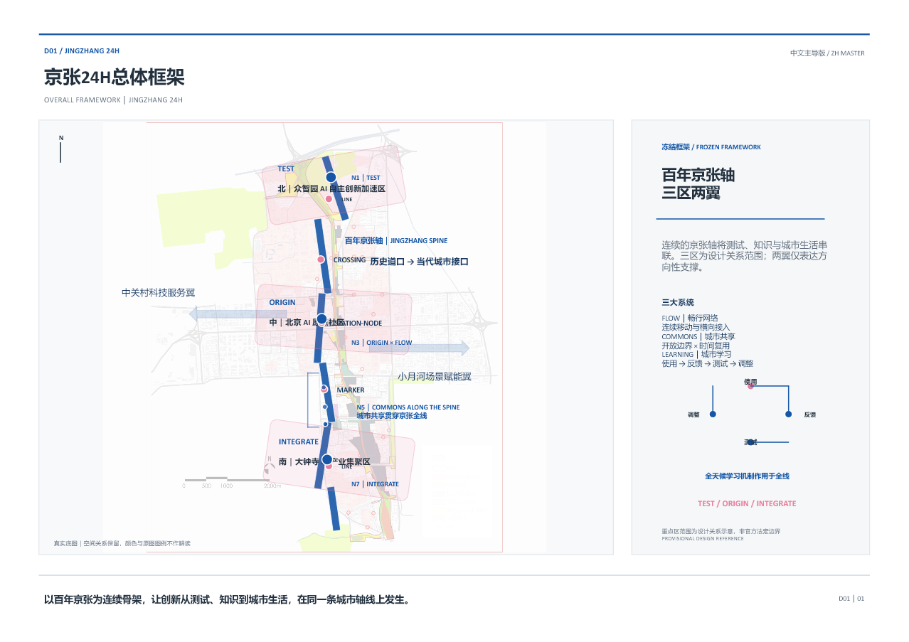
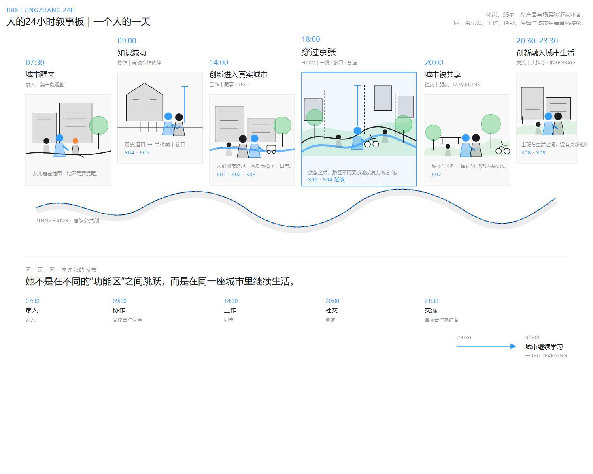
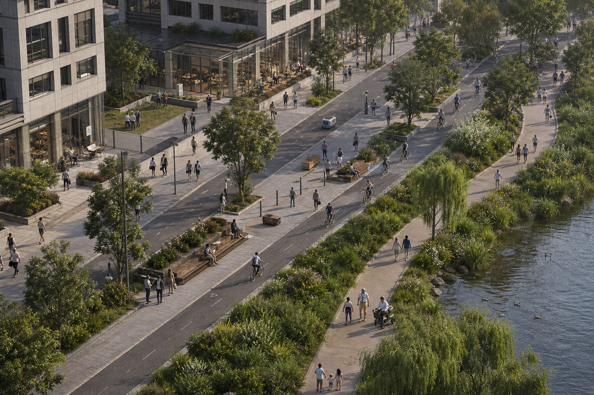
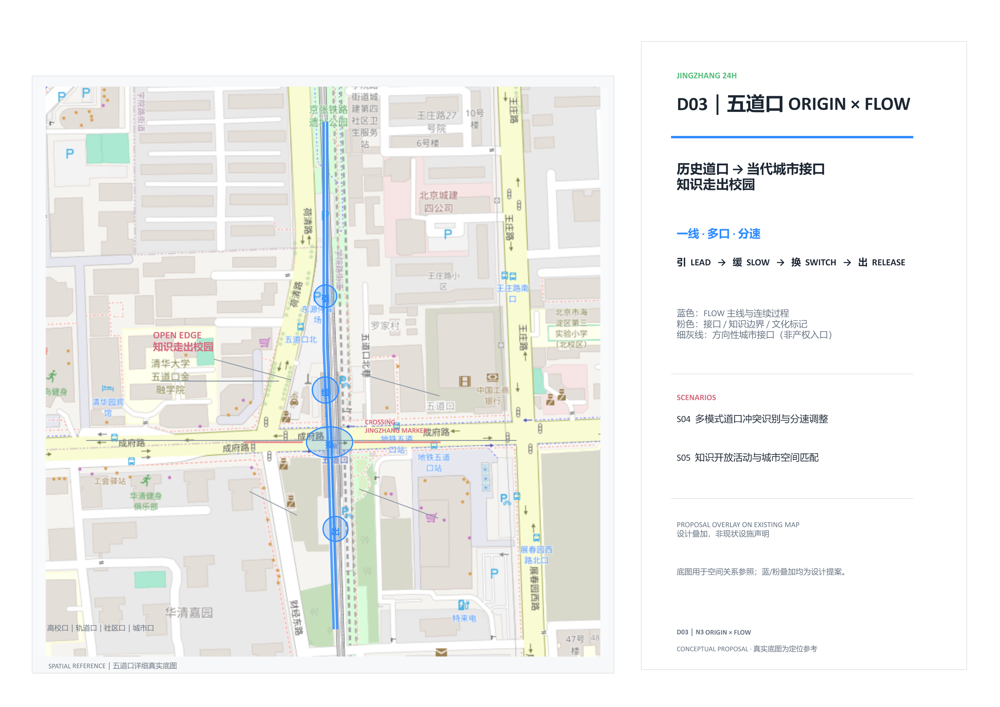
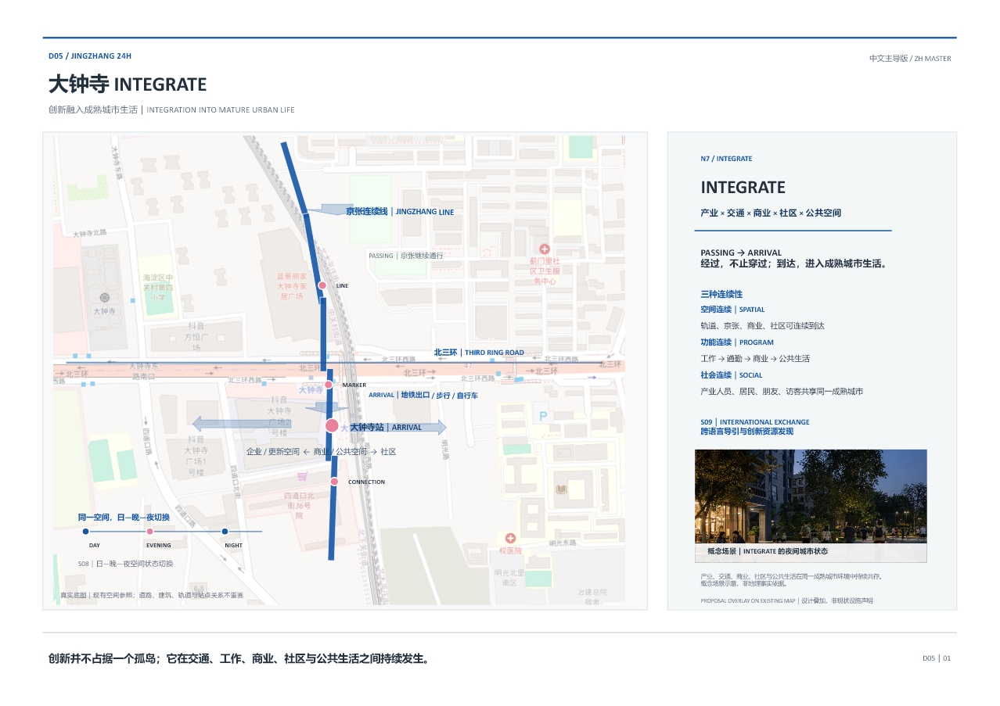
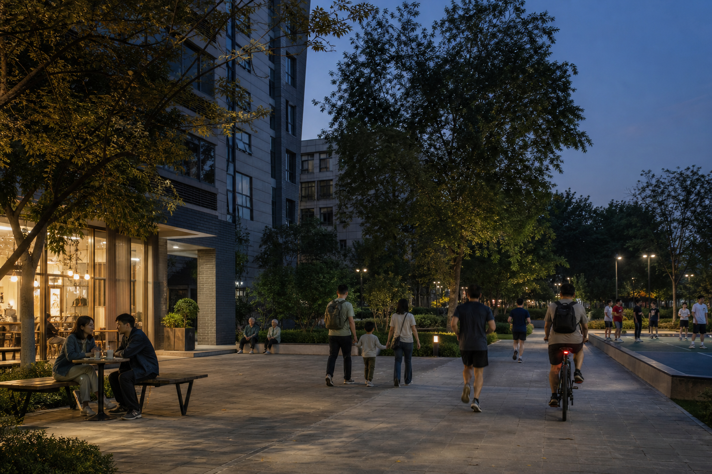
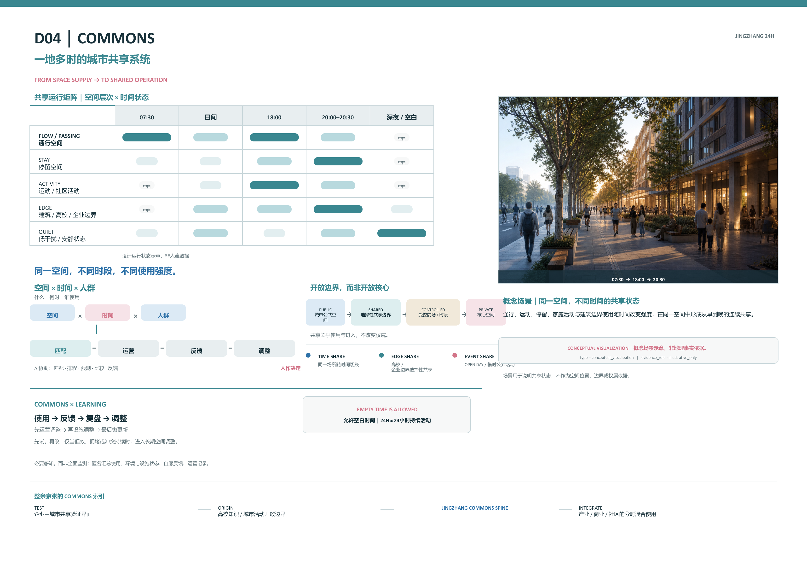
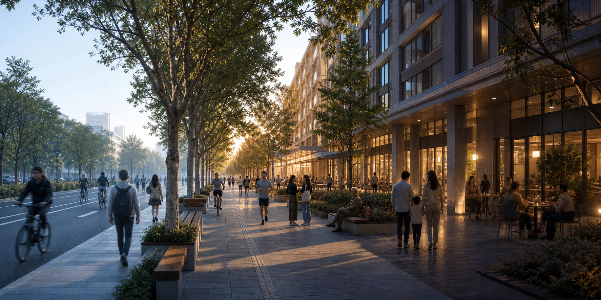
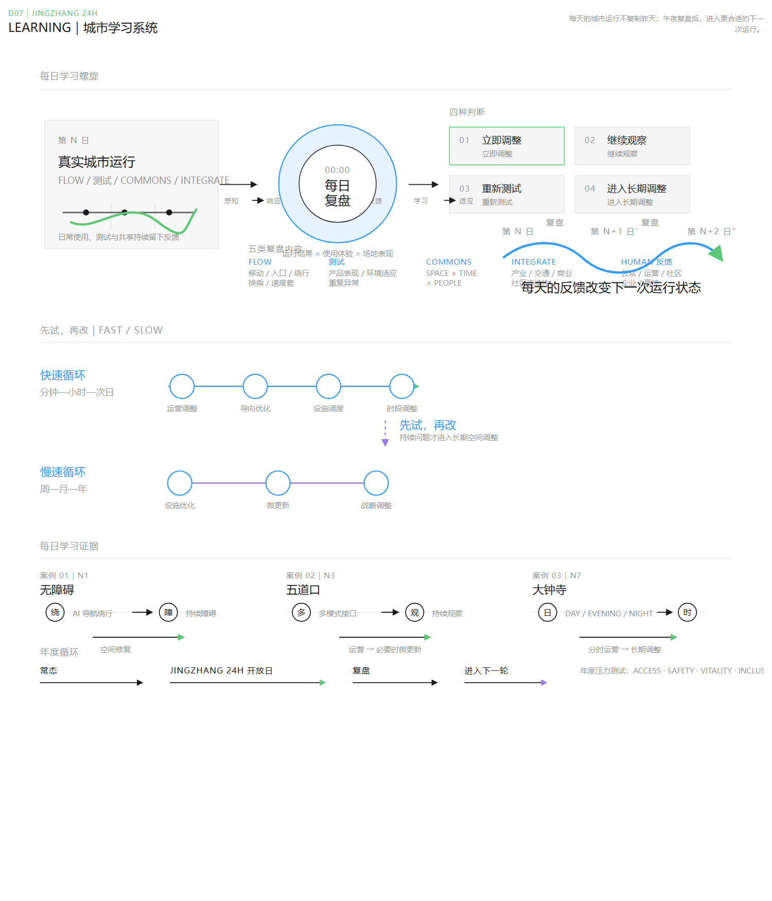

FLOW｜畅行网络
一线、多口、分速；让不同速度和目的持续进入同一条京张城市骨架。
一个人的一天 × 一座城市的学习
A Day of a Person × A City that Learns
JINGZHANG 24H 将 TEST、ORIGIN、INTEGRATE 组织为沿京张连续发生的创新、验证与融入过程，并以 FLOW、COMMONS、LEARNING 三套城市系统连接人的一天与城市的一天。

D01｜PROVISIONAL DESIGN REFERENCE。重点区范围为设计关系示意，非官方法定边界。
林岚的一天从家庭生活、知识交流和真实城市测试，延伸至穿过京张、共享公共生活与大钟寺的日—晚—夜转换。23:30，人的一天结束；00:00，城市把全天运行的反馈带入 DAILY REVIEW。

D06｜Human 24H Storyboard。
一线、多口、分速；让不同速度和目的持续进入同一条京张城市骨架。
通过开放边界、时间复用与功能混合，让既有资源被更多人合理分享。
使用、测试、运营与公众反馈持续发生；城市先试，再改。
T1 → T2 → T3：从受控测试到共享界面与真实城市。


CONCEPTUAL VISUALIZATION｜illustrative only.
历史道口 → 当代城市接口；知识走出校园。

产业、交通、商业、社区与公共生活在大钟寺连续转换。


CONCEPTUAL VISUALIZATION｜illustrative only.
从空间供给转向共享运营。开放边界而非开放核心；允许空白时间，24H 不等于持续活动。


D04｜共享运行矩阵为概念化运营状态，不是测量使用数据。场景图仅为 CONCEPTUAL VISUALIZATION / illustrative only，不是地理证据。
全天的 SENSE、RESPOND、TEST 与 FEEDBACK 持续发生；00:00 的 DAILY REVIEW 将结果区分为 ADJUST NOW、KEEP WATCHING、TEST AGAIN 与 ESCALATE。

S01–S03 是产业测试与验证场景；S04–S09连接知识、交通、共享、产业融合与国际交流；S10 将全天产生的证据接回城市学习循环。

法定边界、产权、FAR、建筑高度、实施权限、道路和市政容量仍为 TO VERIFY。green_ratio 与 public_space_ratio 保持 UNKNOWN / null；不使用未经核验的比例或提升值。